NOVINKY Z NAŠÍ FIRMY
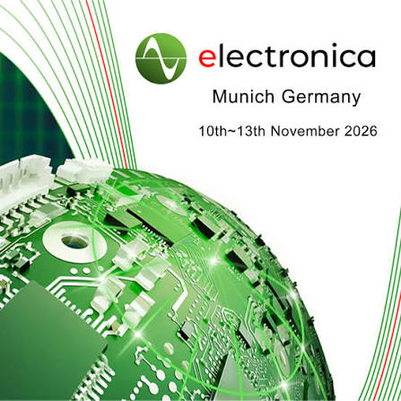
Chystáme se na veletrh do Mnichova
Veletrh ELECTRONICA v Mnichově je nejvýznamnější světový odborný veletrh a konference pro elektronický průmysl. Koná se každé dva roky na mnichovském výstavišti Messe Munchen, vždy v sudých letech. V lichých letech ho střídá PRODUCTRONICA zaměřená na technologie výroby elektroniky a vývoj.
Tento veletrh konaný od 10.- 13. listopadu 2026 zahrnuje komplexní spektrum technologií, produktů a řešení z oblasti elektroniky. Pravidelně láká kolem 80 000 odborných návštěvníků z více než 110 zemí světa. Své inovace zde prezentuje zhruba 3 500 firem a my budeme součástí!
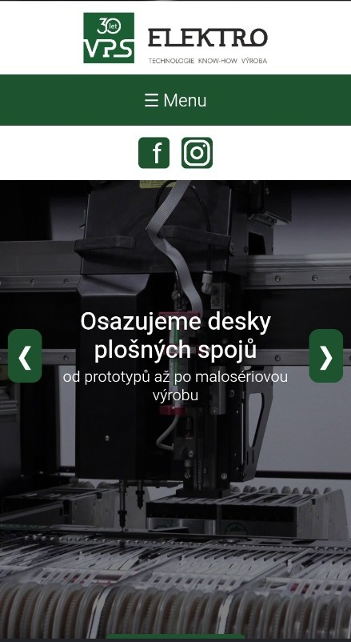
Máme nové internetové stránky!
Vítejte na našich stránkách!
Inovace v reálném prostoru naší firmy si vyžádala svoji inovaci i v prostoru virtuálním. Nové webové stránky jsou interaktivní a snadno Vás zavedou přesně tam, kam právě potřebujete. Hlavní prioritou stránek pro nás byla funkčnost, lehké vyhledávání podle oblastí zájmu a absence zbytečných složitostí.
Návštěvník tak získává možnost lehké orientace na stránkách a srozumitelný stručný text seznámí se základními informacemi.
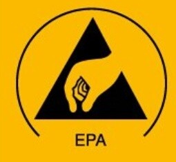
Zavádění EPA prostor do výroby
Prostory firmy se neustále snažíme zdokonalovat z hlediska technického zázemí v oblasti EPA prostoru. Cílem je minimalizovat riziko poškození citlivých součástek elektrostatickým výbojem.
Nejúčinnějším způsobem zdokonalení je omezení lidské chyby. Pracujeme na tom, abychom spojili testování elektronického systému s docházkovým systémem.Výsledek testu se zaznamená a pracovník může bezpečně vstoupit na pracoviště EPA prostoru.
Další zaměření na zdokonalování EPA prostoru vede v přesném vytyčení těchto prostor, řádného uzemnění veškerého vybavení i pořízení doplňků v ESD verzi.
Na pracovišti probíhají pravidelné interní kontroly, aby byly přítomné nedostatky zjištěny a mohlo se naplánovat jejich včasné napravení.
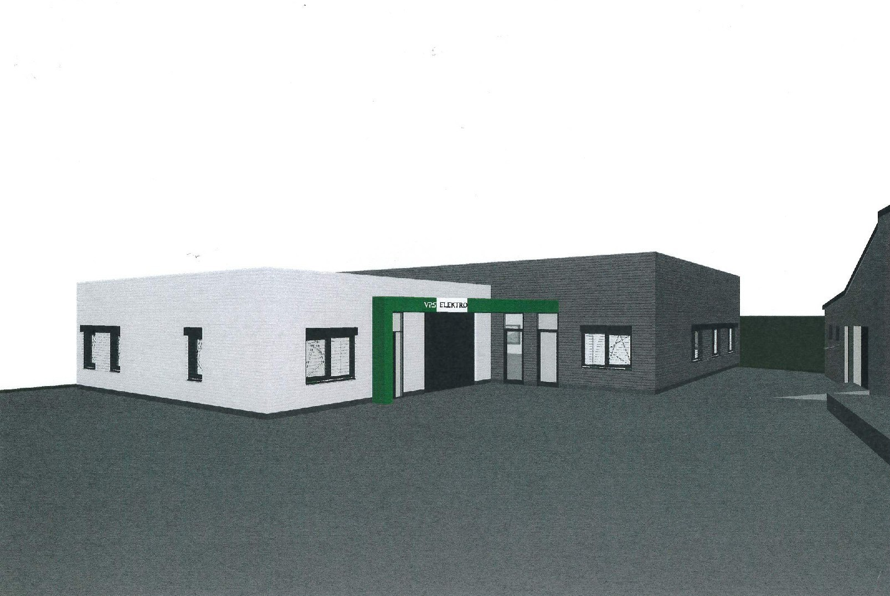
Nová budova pro kompletní výrobu a montáž PCB
Modernizujeme náš areál a kromě probíhajících stavebních pracích na plánované administrativní budově necháváme zpracovávat nový projekt na stavbu nové SMT dílny.
Budova bude specializované pracoviště pouze pro odvětví SMT a bude splňovat nejmodernější kritéria a požadavky na normy ESD.
Začátek termínu realizace projektu plánujeme do roku 2028.
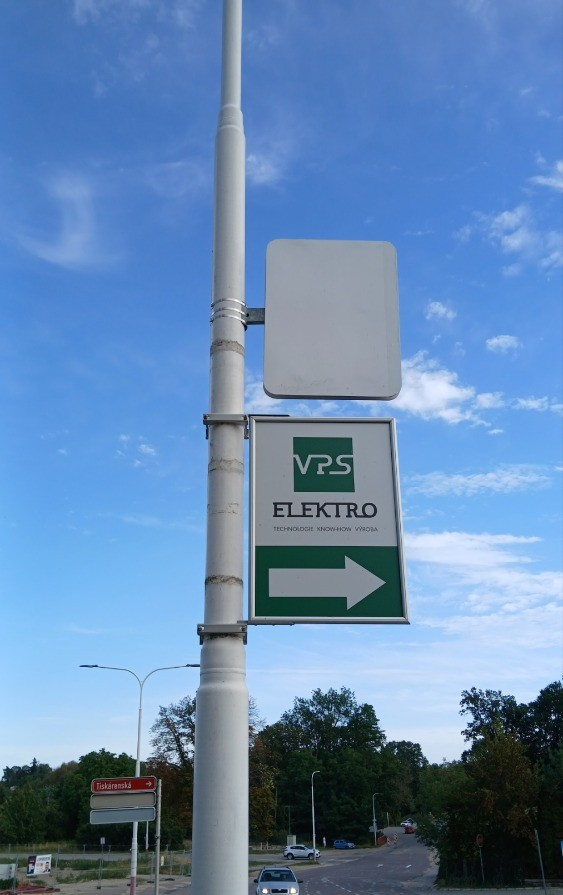
Vyhledatelnost ve městě
Rozhodli jsme se zvýšit povědomí o naší existenci a zároveň vylepšit vyhledatelnost naší firmy ve městě. Proto jsme nechali vyrobit dvě směrové cedule umístěné na frekventované hlavní dopravní tepně na ulici Znojemská.
Ve měste Moravský Krumlov cestu k nám najdete snáze. První směrový poutač je umístěn na kruhovém objezdu a druhý u hlavní křižovatky na cestě k nám, naproti obchodu Penny, při odbočení na ulici Tiskárenská.
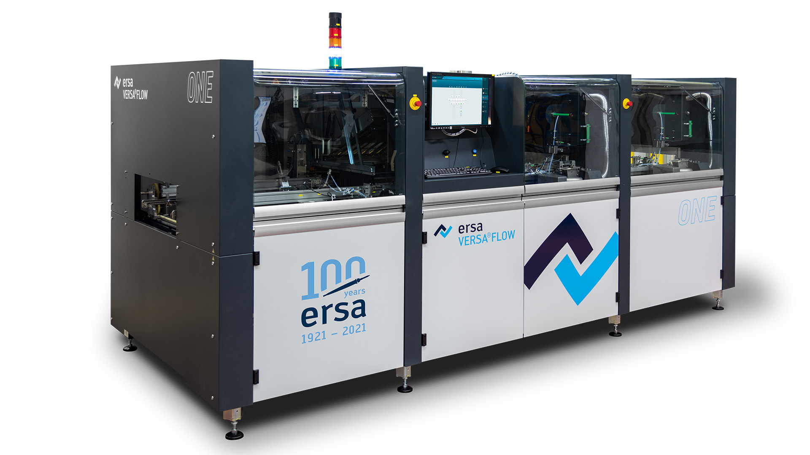
Inovace v technologiích
V inovacích v oblasti technologií sledujeme nejnovější trendy. Mezi naše nejnovější přírustky patří inline selektivní pájka ERSA Versaflow One. U vhodných zakázek nám umožňuje přechod na selektivní pájení zkrátit dobu pájení až o 50% oproti původní technologii. Tato investice byla velkým zásahem do prostoru celé dílny a museli jsme celou dílnu restukturalizovat.
Dále jsme doplnily dopravníkové systémy od výrobce JUKI, které slouží k automatizaci SMT linky po celou dobu průběhu výrobního procesu. Obměnili jsme část ručních pájek a pořídili jsme dalšího pájecího robota QUICK.
Dílnu kovoobrábění jsme doplnili o nový CNC router a zaměřili jsme se i na oblast čištění suchým ledem. K využití náhodné montáže a ke skladování byly pořízeny dvě klimatizované buňky.
Posílili jsme přívod elektřiny a vyměnili jsme dusíkové nádoby a kompresor za objemnější.
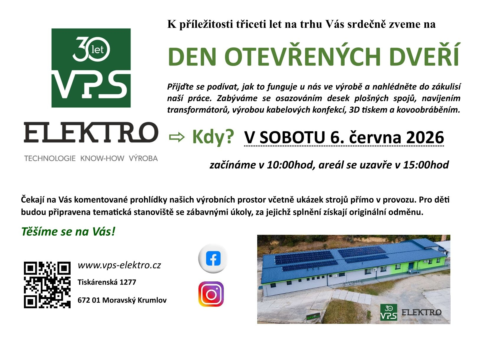
Vhled do našich prostor
Den otevřených dveří jsme uspořádali k významné příležitosti 30letého výročí od založení. Byli jsme velmi mile překvapení z vysokého zájmu veřejnosti a těšil nás zájem o náš obor působení. Veřejnosti byly zpřístupněny prosotry skladu i výrobních dílen. V komentovaných prohlídkách se zájemci seznámili s výrobními procesy i s nejmodejnějšími technologiemi.
Ve venkovních prostorách našeho areálu byly nachystány stanoviště, kde nahlédly do tajů elektra i děti nejrůznějšího věku. Za splnění úkolů jim byla vyrobená originální odměna na míru. Děkujeme všem návštěvníkům za jejich čas, který se rozhlodli strávit právě u nás!
https://www.mkrumlovsko.cz/zpravy/aktualne/33846--V-P-S-Elektro-v-Moravskem-Krumlove-otevrelo-dvere-navstevnikum.html
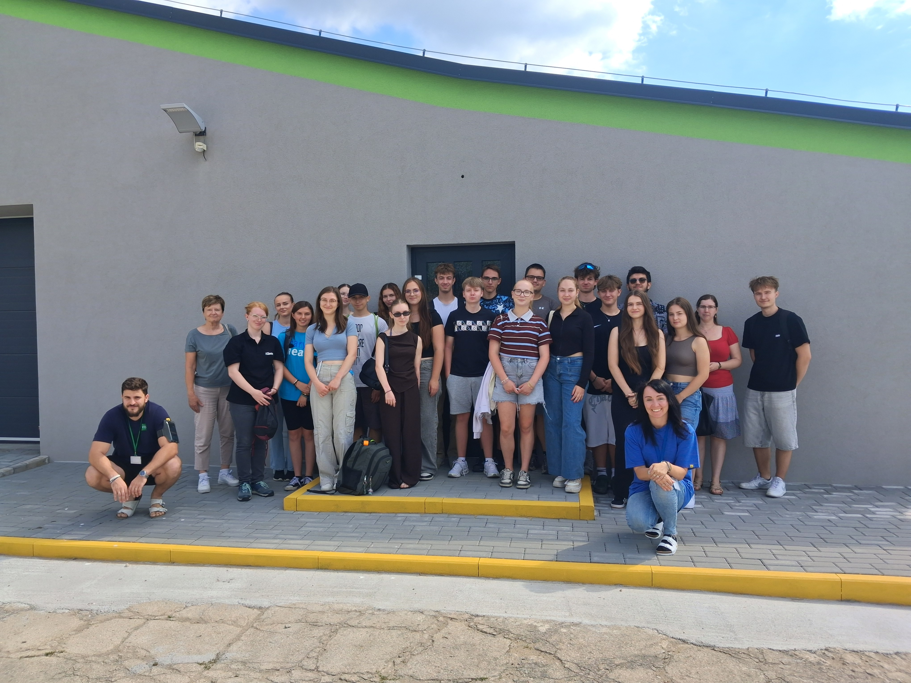
Žáci z Moravského Krumlova nahlédli do světa moderních technologií
Měsíc červen se v naší firmě nesl v duchu exkurzí základních a středních škol z okolí Moravského Krumlova. Poskytli jsme k nahlédnutí naše prostory skladu, SMT dílny, dílny navíjení, kabelové konfekce, kovoobrábění a lakovny, abychom děti seznámili s tématikou se kterou se jinde nedostanou do přímého kontaktu. Protože exkurze probíhali za přímého provozu, mohli studenti shlédnout celý technologický proces ve výrobě.
Tyto exkurze jsme cíleně nabídli pro žáky osmých ročníků a pro studenty předposledních ročníku středních škol. Cílem mělo být, aby viděli možnosti dalšího vzdělávání z oblastí elektrotechnických oborů nebo viděli možnosti pracovního uplatnění. Snažili jsme se je obeznámit s důležitým faktorem, že v této profesi je důležitá týmová práce, svědomitost a pečlivost. Děkujeme všem školám za jejich zájem a věříme, že v této aktivitě budeme pokračovat i nadále.
https://www.mkrumlovsko.cz/zpravy/aktualne/33847--Zaci-v-Moravskem-Krumlove-zazili-exkurzi-do-sveta-modernich-technologii.html
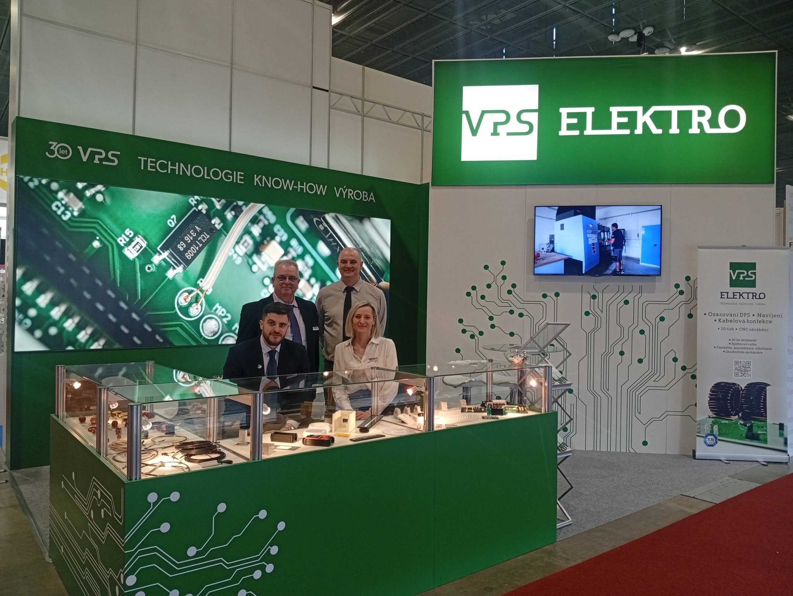
Vystavování na veletrhu Ampér 2026
Pravidelně se účastníme Mezinárodního veletrhu elektrotechniky, elektroniky a energetiky Ampér. Letos připadl na termín 17.-19.3.2026. Ve dvou pavilonech prezentovalo 468 firem z 33 zemí světa. Návštěvnost dosáhla počtu přes 27 000 zájemců.
Děkujeme všem zákazníkům, zaměstnancům i zájemcům, že se za námi přišli podívat. Važíme si Vaší účasti a již teď se těšíme na další ročník.

Slavíme tři dekády na trhu
Rok 2026 je významným mezníkem v naší existenci. Od svého založení 5.2.1996 se naše firma vypracovala na spolehlivého partnera v oblasti elektrotechnického průmyslu. Díky našemu týmu odborníků, našim zkušenostem, inovacím a důrazu na kvalitu jsme si vybudovali pevné místo mezi firmami ze stejného odvětví.
K příležitosti tohoto jubilea jsme si nechali vytvořit speciální edici našeho loga. Děkujeme všem našim zákazníkům, partnerům a zaměstnancům za důvěru a podporu.
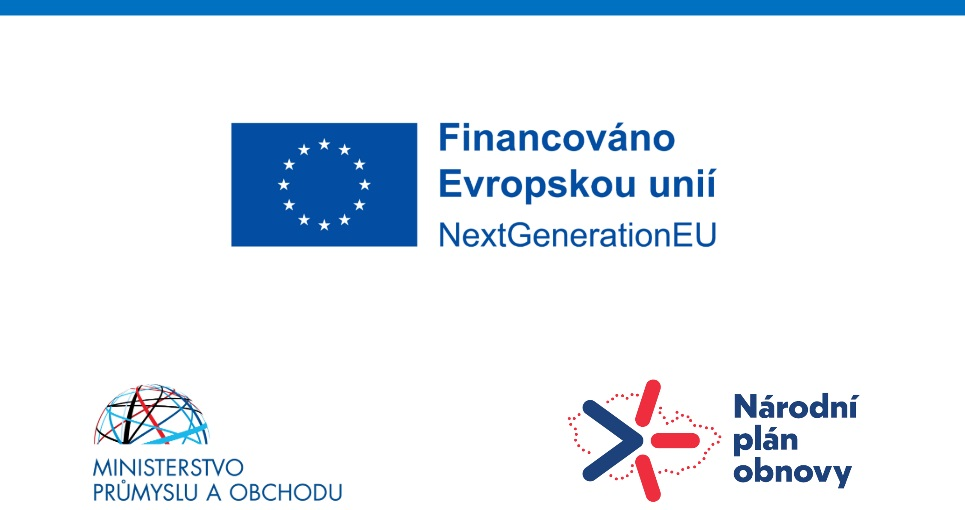
Čerpání dotace na fotovoltaický systém
Myslíme na ekologii! Naše společnost si nechala nainstalovat fotovoltaický systém pro energetickou úsporu v rámci provozu areálu. Cílem je také menší zátěž životního prostředí a ekologicky šetrnější výroba elektrické energie.
Tento projekt je financován Evropskou unií.
Začátek termínu realizace projektu byl konec roku 2023.
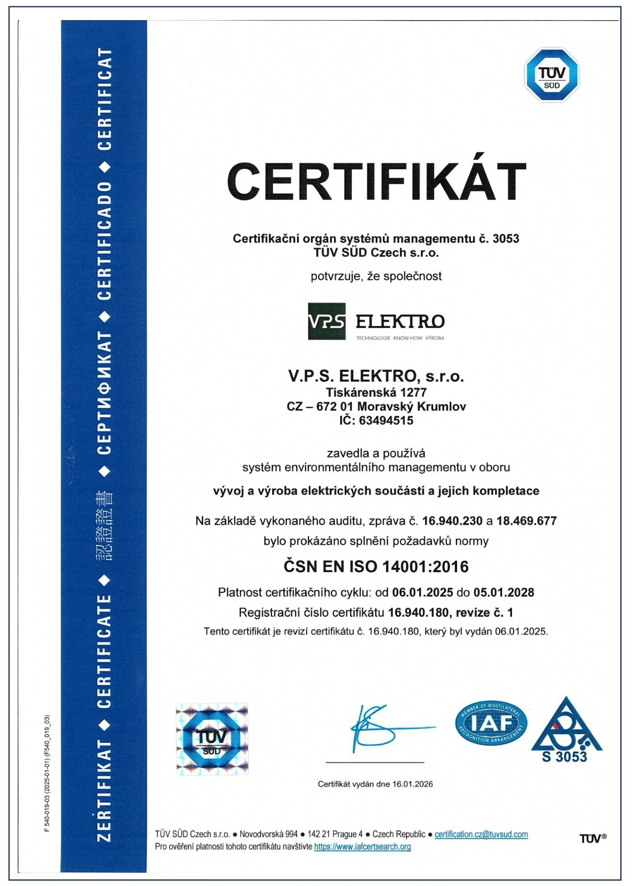
Certifikát ISO 14001:2016
Naše firma zavedla a používá systém environmentálního managementu v oboru vývoj a výroba elektrických součástí a jejich kompletace. Na základě vykonaného auditu bylo prokázáno splnění požadavků normy ČSN EN ISO 14001:2016.
Platnost certifikačního cyklu: od 6.1.2025 do 5.1.2028.
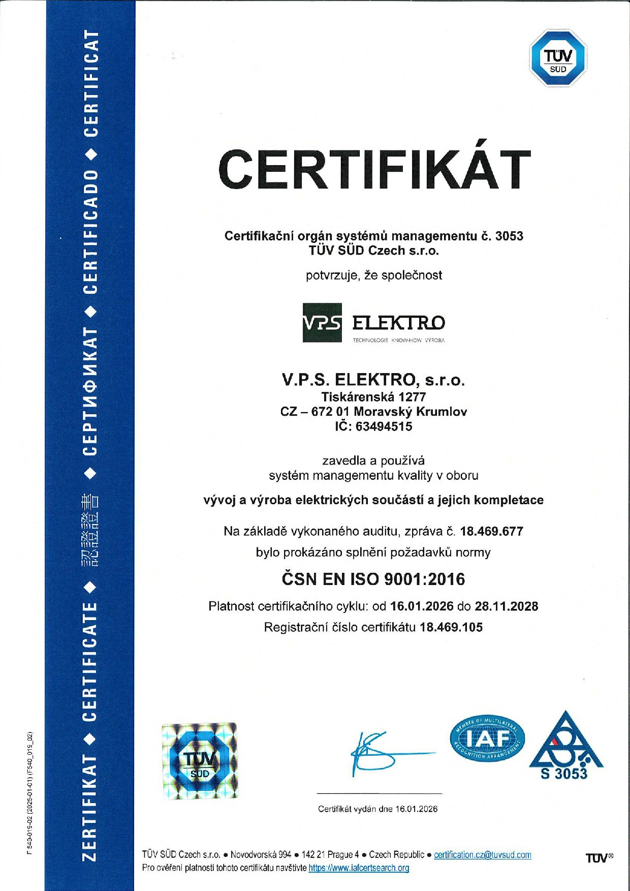
Certifikát ISO 9001:2016
Naše firma zavedla a používá systém managementu kvality v oboru vývoj a výroba elektrických součástí a jejich kompletace. Na základě vykonaného auditu bylo prokázáno splnění požadavků normy ČSN EN ISO 9001:2016.
Platnost certifikačního cyklu: od 16.1.2026 do 28.11.2028.